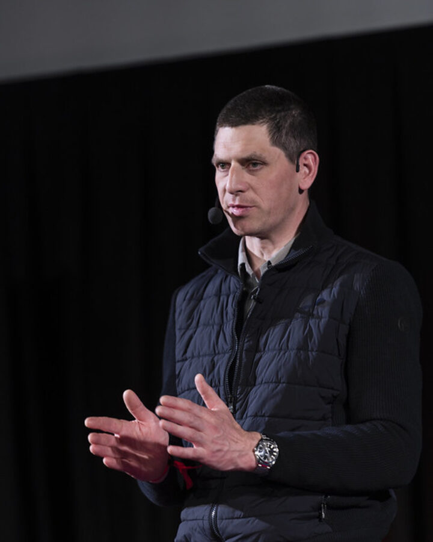
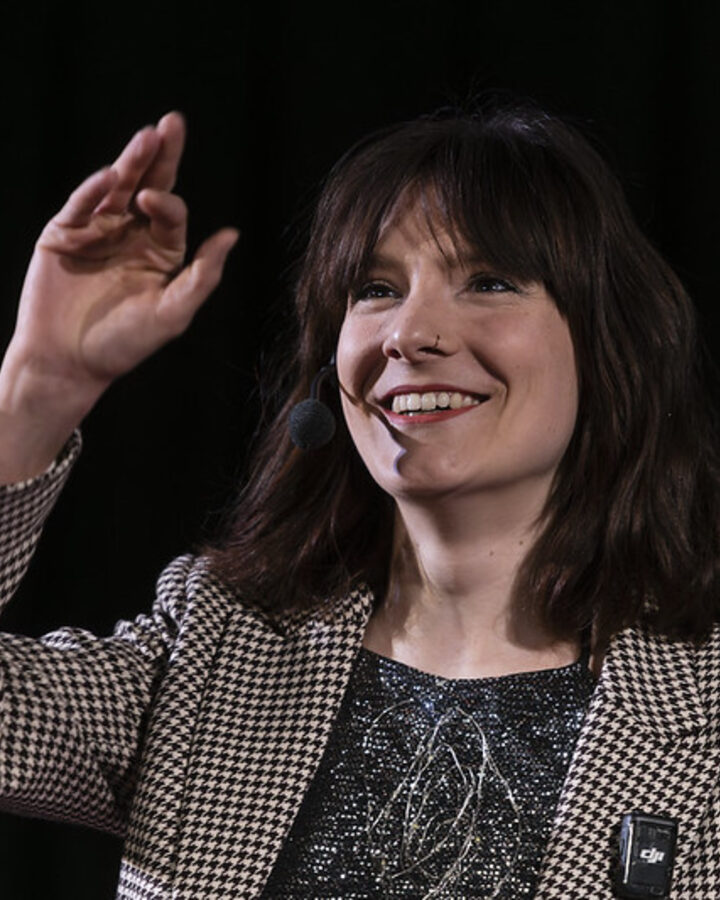
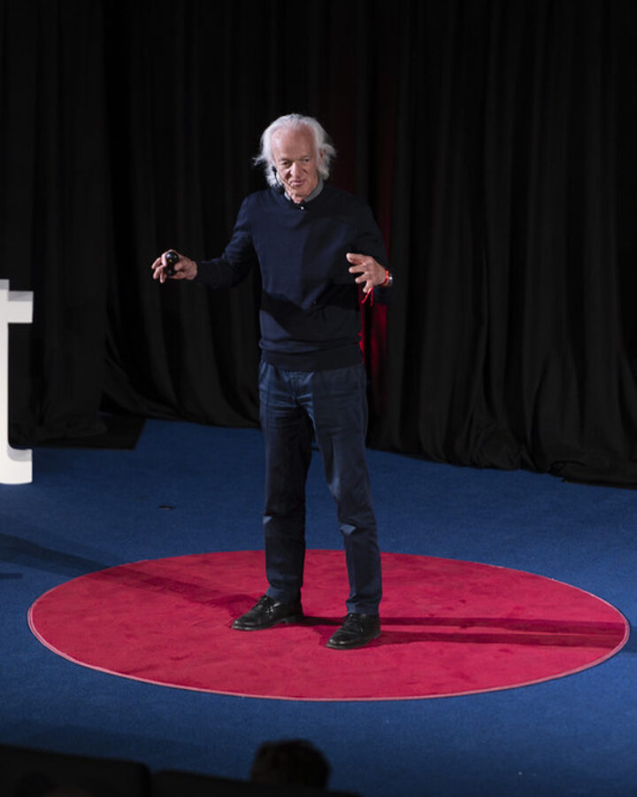
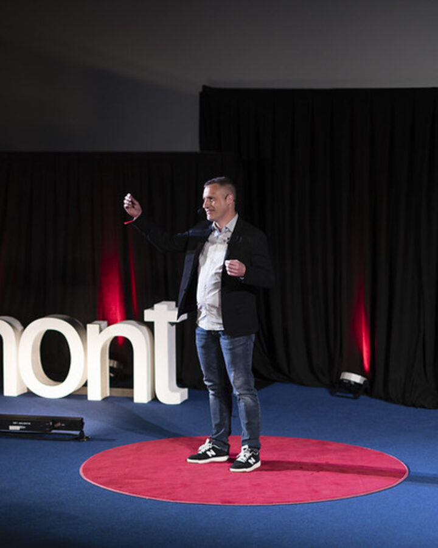

Le 23 avril 2026, le canton du Jura a accueilli son tout premier TEDx. Le thème : « INTELLIGENCE(S) » — cette étincelle qui résout un problème du quotidien, cette empathie qui comprend sans mots, ce geste précis qui transforme une matière brute en œuvre d'art.
Dès l'arrivée à Cinémont, le public a été accueilli dans une ambiance chaleureuse propice aux échanges. Ont suivi huit conférences courtes et percutantes, rythmées par des interventions artistiques et animées par Cédric Adrover. À l'entracte, un souper debout a permis de discuter, de rencontrer du monde et de laisser infuser les idées. La soirée s'est clôturée en beauté avec un after festif.
L'aftermovie
51 secondes
02 Conférencier·ère·s 2026
8 voix, 8 regardssur les intelligences
01

Jérémy Desbraux
Chef de cuisine · Maison Wenger
Chez Jérémy Desbraux, l'assiette raconte un territoire. Les client·es de la Maison Wenger ne viennent pas chercher ce qu'ils trouveraient à Lausanne ou à Genève : ils viennent vivre une expérience globale et retrouver le Jura dans l'assiette. Une gastronomie ancrée dans le terroir, qui tire tout un écosystème vers le haut — travailler en réseau permet de sélectionner des producteur·trices qui élèvent à leur tour leur niveau pour fournir de meilleurs produits.
« Il·elles veulent vivre une expérience globale et retrouver le Jura dans l'assiette. »
Depuis quelques années, QoQa a troqué la pyramide contre une hiérarchie en cercle qui valorise l'intelligence émotionnelle et créative. L'objectif : décider plus vite, au plus près du terrain. En mer, dit-il, ça reviendrait à choisir cent Zodiacs facilement manœuvrables plutôt qu'un gros paquebot. Chez QoQa, celle ou celui qui a « un caillou dans sa chaussure » a l'autorité de mettre en œuvre la solution — chacun·e peut saisir les opportunités tout en avançant dans la même direction.
« Le chef est mort. Vive les intelligences ! »
03

Eve Mittempergher
Comédienne & costumière de théâtre
« Sortir de sa tête, les voix détournées de la créativité »
Pour Eve Mittempergher, la créativité n'est pas un don réservé à quelques-uns : c'est un muscle. Son propos invite à dépasser l'idée théorique pour en faire quelque chose de concret, en s'appuyant sur ses ressources intimes : créer à partir de soi, faire passer les idées à travers soi, et devenir ainsi un corps créatif, un corps pensant.
« La créativité est un muscle qui se travaille, qui s'expérimente. »
Dans un monde fait d'accélération et d'optimisation, Marielle Byworth pose une question essentielle. De Hong Kong au Jura, c'est un pot de miel de sapin — récolté par son oncle à Courtételle, offert chaque Noël — qui lui révèle ce que le luxe spectaculaire ne pouvait pas donner : un fil tendu entre les gens, entre les générations, entre le territoire et ceux qui l'habitent. L'entreprise de demain, comme le troupeau de chevaux qu'elle a observé en Argentine, ne sera pas celle qui domine, mais celle qui relie.
« Et si le nouveau luxe n'était pas d'avoir plus, mais de se souvenir que nous sommes reliés ? »
Peintre en décors au Grand Théâtre de Genève, Janel Fluri raconte un parcours d'artiste atypique et met en évidence les enjeux de l'expérimentation : ce que l'on ose, ce que l'on rate, et ce que l'on en fait. Une conférence sur le droit à l'essai, adressée autant aux artistes qu'à celles et ceux qui n'osent pas commencer.
« Qui serais-tu si tu avais le courage d'essayer ? Au contraire, que se passera-t-il si tu échoues ? »
06

Ernst Zürcher
Ingénieur forestier · Sciences du bois
« La forêt, siège d'une intelligence collective ? »
Ernst Zürcher rappelle que Gaïa, la Terre, se protège avec la forêt. Les arbres disposent d'une intelligence émotionnelle que l'on peut mesurer de manière électrique ; la faune et la flore qui vivent au sein de la forêt communiquent entre elles et échangent de différentes manières, contribuant à disséminer informations et connaissances. La sylvosphère — la forêt considérée comme un organisme vivant et complexe — apparaît alors comme un élément-clé à préserver.
Avec À part entière, Laure Donzé a inventé une année d'expériences pour les jeunes, où l'on encourage les élèves à explorer leurs compétences douces. On y autorise la prise de risques, on y soutient des découvertes inédites : un véritable terrain d'exploration, où l'on fait éclore autant des humains que des projets.
« On fait éclore des humains et des projets. »
08

Stéphane Cuenat
Docteur en informatique · Spécialiste IA
« L'impossible : un tremplin pour l'homme, une frontière pour l'IA »
Une machine coûte moins cher qu'une personne et travaille nuit et jour sans se plaindre. Pourquoi, dès lors, avoir des employé·es ? Parce que lorsque l'IA rencontre l'impossible, elle le perçoit comme un obstacle définitif, là où l'être humain y trouve une invitation à s'arrêter, à réfléchir, à faire preuve d'inventivité. L'exemple du GPS le résume : la machine ne connaît pas les particularités d'un territoire, elle ne sait ni comment ni pourquoi s'y rendre sans que l'humain lui donne l'information.
« L'intelligence, c'est savoir où aller, ce que la machine ne sait pas. »
Champion de France DMC 2024 · Open Format · Finaliste mondial
DJ IDEM a clôturé la soirée avec un set qui a fait basculer la salle en mode after. L'animation durant le repas et les pauses a été assurée par DJ Hakim.
La tableSismic
Première mondiale · Delémont
Laurent Steulet, accompagné de Joël Joliat, a présenté la table tangible Sismic — une exclusivité dévoilée en première mondiale à Delémont. Avec d'autres animations surprises réparties tout au long de la soirée.
05 Workshop pour les pros
« L'ENTREPRISEDE DEMAIN »
Quelques heures avant l'ouverture des portes, nous avions décidé d'offrir une immersion concrète dans l'intelligence collective pour les professionnel·le·s autour de ces questions :
À quoi ressemblera le futur du travail ? Comment nos intelligences se conjugueront-elles pour relever les défis de demain ?
Co-organisé et offert par nos partenaires de choc — Creapole SA, la Haute école de gestion Arc et la Mobilière, Agence générale du Jura — ce workshop a réuni plus de 25 participant·es : directeur·trices, étudiant·es en HEG et responsables RH.
Télécharger le livre blanc
Le fruit de l'atelier, enrichi par les visions des conférencier·ère·s de la journée.
TEDxDelémont ne pourrait voir le jour sans le soutien précieux de partenaires engagés. Nous les remercions pour leur confiance et leur engagement en faveur de la diffusion des idées dans le Jura.